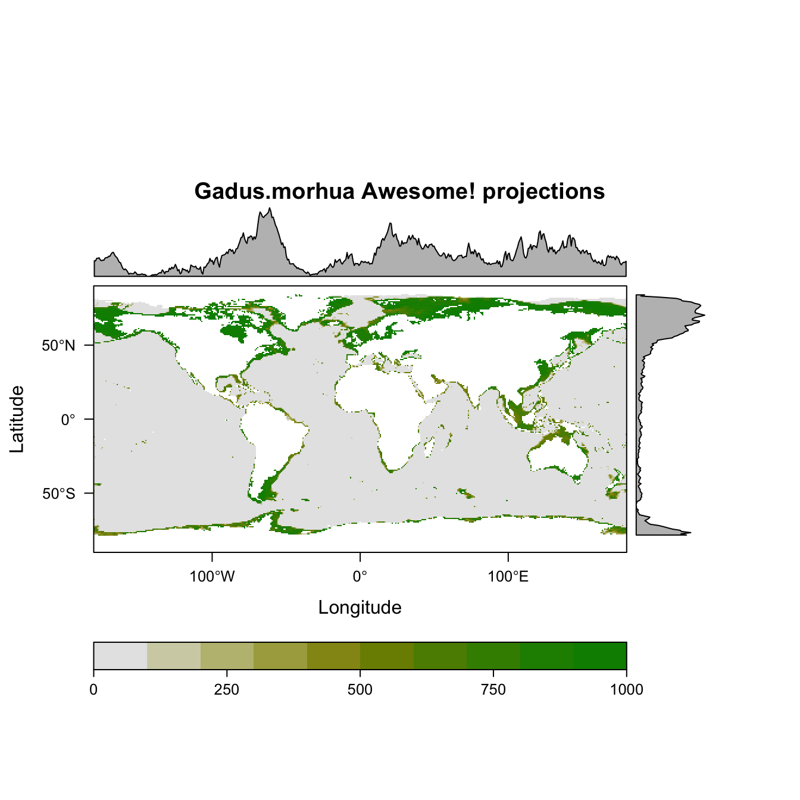

Online ecology - Individual species description
David Beauchesne, Kévin Cazelles & Rémi Daigle
June 19, 2017 - last update on July 02, 2017
Status: 

Online ecology
Let’s imagine that we are interested in a species in a given area and wish to know as much as possible about it. But, you can’t go out in the field because funding is running short. What we do have, however, is a certain knowledge of the tools that are at our disposal. In a series of post about online ecology, we will find out exactly just how far these tools allow us to delve into the ecology of the species that interest us.
Online ecology posts:
- Individual species description (this post)
- Community spatial distribution (under development)
- Biotic interactions (under development)
- Scenarios of global change impact on community structure (under development)
- more to come!
Individual species description
This post focuses on the simplest yet still complicated aspect of ecology, i.e. describing a species as thoroughly as possible with the tools at our disposal.
Special thanks to the developers at ROpenSci, who built many of the R package used to access the open access tools we present in this post.
Setting up R
R version used to build the last update of this post
sessionInfo()[[1]]$version.string## [1] "R version 3.4.0 (2017-04-21)"Defining species and area of interest
We start by selecting the species and the area in which we are interested. For this post, we focus on the Atlantic cod (Gadus morhua) in the estuary and gulf of St. Lawrence in eastern Canada.
Let’s set the parameters and create the spatial bounding box that we will be using for the area of interest. Note that all these parameters can be changed to extract informations for other species in other habitats.
# Species of interest
sp <- 'Gadus morhua'
# Extent of area of interest
latmax <- 52.01312
latmin <- 45.52399
lonmax <- -55.73636
lonmin <- -71.06333
# Create a spatial bounding box for the area of interest using the 'sf' package:
# create a matrix:
bbmat <- cbind(c(lonmin,lonmax,lonmax,lonmin,lonmin),
c(latmin,latmin,latmax,latmax,latmin))
# 2. Make the matrix a 'simple features' polygon:
bbsf <- sf::st_polygon(list(bbmat))
# and let's give it information about the projection:
bbsfc <- sf::st_sfc(bbsf,crs="+proj=longlat +datum=WGS84")
# finally, let's make it a simple features data.frame:
bb <- sf::st_sf(name="Study Site",geometry=bbsfc)Describe your species
Retrieve miscalaneous ecological information: Fishbase
We’ll start with a description of the species. First, let’s see what fishbase has to offer. This online data repository, along with sealifebase, contains a lot of precious information on marine and aquatic species all over the world and is accessible through the package rfishbase
# Species ecology
ecol <- rfishbase::ecology(sp)
ecol <- cbind(colnames(ecol), t(ecol))
rownames(ecol) <- NULL
ecol <- ecol[ecol[,2] != 0, ] # remove 0
ecol <- ecol[!is.na(ecol[,2]), ] # remove NAs
kable(ecol, col.names = c('Descriptors', 'Attributes'), "html") %>%
kable_styling(full_width = F)| Descriptors | Attributes |
|---|---|
| autoctr | 33 |
| sciname | Gadus morhua |
| StockCode | 79 |
| EcologyRefNo | 1371 |
| HabitatsRef | 1371 |
| Neritic | -1 |
| Intertidal | -1 |
| Oceanic | -1 |
| Estuaries | -1 |
| Herbivory2 | mainly animals (troph. 2.8 and up) |
| HerbivoryRef | 5743 |
| FeedingType | hunting macrofauna (predator) |
| FeedingTypeRef | 5743 |
| DietTroph | 4.09 |
| DietSeTroph | 0.179 |
| DietTLu | 4.34 |
| DietseTLu | 0.72 |
| DietRemark | Troph of adults from 7 studies. |
| DietRef | 26813 |
| FoodTroph | 4.29 |
| FoodSeTroph | 1 |
| FoodRemark | Trophic level estimated from a number of food items using a randomized resampling routine. |
| AddRems | Opportunistic predator that forages mainly at dawn and dusk (Refs. 1371, 46189). Larvae feed mainly on zooplankton while juveniles prey predominantly on benthic crustaceans; adults feed mainly on zoobenthos and fish (Refs. 5743, 9604, 26813) including juvenile cod. Fish prey becomes more common in the diet with increasing body size (Refs. 1371, 89387). Adults may cover large distances during the feeding period (Ref. 89387). Young cod are also preyed upon by different fish species and octopus. Adult cod are prey items of top predators like sharks, rays, whales, dolphins, seals, and sea birds (Refs. 9023, 9581, 26954, 43651, 45735). In the Baltic it grows up to 5 kg weight in 7-8 years; in the North Sea it reaches 8 kg in the same time span . Natural mortality for adults of both stocks is assumed to be around M=0.2, resulting in a mean adult life expectancy and mean duration of the reproductive phase of 5 years (Ref. 88171). Parasites of the species include protozoans (trypanosome), myxosporidians, monogeneid, trematodes, cestodes, nematodes, acanthocephalan, hirudinid and copepods (Ref. 5951). |
| Schooling | -1 |
| SchoolingFrequency | sometimes |
| SchoolingLifestage | juveniles and adults |
| SchoolShoalRef | 1371 |
| AssociationsRemarks | Generally considered a demersal fish although its habitat may become pelagic under certain hydrogrphic conditions, when feeding or spawning. There is some evidence that cod leave the bottom and school pelagically to spawn in preferred temperatures when bottom tempetatures are unsuitable. Gregarious during the day, forming compact schools that swim between 30-80 m above the bottom, and scatter at night (Ref. 1371). Schooling behavior may be adaptive for feeding. Reproductive behavior during spawning involves the circling of a female often by only one male per spawning bout (Ref. 86779). |
| SoftBottom | -1 |
| HardBottom | -1 |
| Rocky | -1 |
| SeaGrassBeds | -1 |
| Entered | 2 |
| Dateentered | 1991-10-17T00:00:00.000Z |
| Modified | 2374 |
| Datemodified | 2014-02-06T00:00:00.000Z |
| SpecCode | 69 |
Retrieving taxonomic information: Taxize
We can also extract taxonomic informations using the package taxize. This package allows you to extract and validate, among other things, the taxonomy of millions of species by accessing an important number of online databases accessible through their Application Programming Interface (API).
# Export the taxonomy of the species of interest
kable(taxize::classification(sp, db = 'worms', verbose = FALSE)[[1]], "html") %>%
kable_styling(full_width = F)| name | rank | id |
|---|---|---|
| Animalia | Kingdom | 2 |
| Chordata | Phylum | 1821 |
| Vertebrata | Subphylum | 146419 |
| Gnathostomata | Superclass | 1828 |
| Pisces | Superclass | 11676 |
| Actinopterygii | Class | 10194 |
| Gadiformes | Order | 10313 |
| Gadidae | Family | 125469 |
| Gadus | Genus | 125732 |
| Gadus morhua | Species | 126436 |
# We can also extract the common or scientific names using sci2comm() & comm2sci(), respectively.
taxize::sci2comm(sp, db = 'itis')## $`Gadus morhua`
## [1] "morue de l'Atlantique" "bacalao del Atl<e1>ntico"
## [3] "cod" "rock cod"
## [5] "morue franche" "Atlantic cod"# Or find out whether there are other names under which the species is known
taxize::synonyms(sp, db = 'itis')## $`Gadus morhua`
## sub_tsn acc_tsn message
## 1 164712 164712 no syns found
##
## attr(,"class")
## [1] "synonyms"
## attr(,"db")
## [1] "itis"# Another really interesting feature is to extract all known species at a given taxonomic scale.
# Let's take the genus level and see the first 20 species that are part of that genus on the itis database
kable(taxize::children(strsplit(sp, ' ')[[1]][1], db = 'itis')[[1]], "html") %>%
kable_styling(full_width = F)| parentname | parenttsn | rankname | taxonname | tsn |
|---|---|---|---|---|
| Gadus | 164710 | Species | Gadus macrocephalus | 164711 |
| Gadus | 164710 | Species | Gadus morhua | 164712 |
| Gadus | 164710 | Species | Gadus ogac | 164717 |
| Gadus | 164710 | Species | Gadus chalcogrammus | 934083 |
Retrieving trophic informations: GloBI
We can also retrieve information on known biotic interactions involving our species of interest. The Global Biotic Interactions web platform contains thousands of empirical binary interactions for multiple types of interactions, all over the world, and is accessible using the package rglobi.
# There are multiple types of interactions available on GloBI
kable(rglobi::get_interaction_types()[,1:3], 'html') %>%
kable_styling(full_width = F)| interaction | source | target |
|---|---|---|
| eats | consumer | food |
| eatenBy | food | consumer |
| preysOn | predator | prey |
| preyedUponBy | prey | predator |
| kills | killer | victim |
| killedBy | victim | killer |
| parasiteOf | parasite | host |
| hasParasite | host | parasite |
| hostOf | host | symbiont |
| hasHost | symbiont | host |
| pollinates | pollinator | plant |
| pollinatedBy | plant | pollinator |
| pathogenOf | pathogen | host |
| hasPathogen | host | pathogen |
| vectorOf | vector | pathogen |
| hasVector | pathogen | vector |
| dispersalVectorOf | vector | seed |
| hasDispersalVector | seed | vector |
| symbiontOf | source | target |
| flowersVisitedBy | plant | visitor |
| visitsFlowersOf | visitor | plant |
| interactsWith | source | target |
# For now let's focus on predator-prey interactions
prey <- rglobi::get_prey_of(sp)$target_taxon_name # Retrieve prey
pred <- rglobi::get_predators_of(sp)$target_taxon_name # Retrieve predators
length(prey) # Number of prey## [1] 85 length(pred) # Number of predators## [1] 27 prey[1:20] # First 20 prey## [1] "Neocalanus tonsus" "Pseudocalanus elongatus"
## [3] "Arctica islandica" "Gastrosaccus spinifer"
## [5] "Diastylis rathkei" "Buccinum undatum"
## [7] "Corystes cassivelanus" "Eledone cirrhosa"
## [9] "Gonatus fabricii" "Bathypolypus arcticus"
## [11] "Rossia moelleri" "Bathypolypus bairdii"
## [13] "Todarodes sagittatus" "Cancer pagurus"
## [15] "Rossia macrosoma" "Pandalus borealis"
## [17] "Pandalus montagui" "Lithodes maja"
## [19] "Hyas coarctatus" "Crangon allmanni" pred[1:20] # First 20 predators## [1] "Larus" "Thalasseus sandvicensis"
## [3] "Phalacrocorax carbo" "Phoca vitulina"
## [5] "Sprattus sprattus" "Clupea harengus"
## [7] "Scomber scombrus" "no name"
## [9] "Gadus morhua" "Thunnus thynnus"
## [11] "Petromyzon marinus" "Pollachius virens"
## [13] "Molva molva" "Squalus acanthias"
## [15] "Hippoglossoides platessoides" "Pomatomus saltatrix"
## [17] "Myxine glutinosa" "Lophius piscatorius"
## [19] "Eutrigla gurnardus" "Hippoglossus hippoglossus"Making our search spatially explicit
Since we are interested in a specific area, making our search spatially explicit would be highly valuable. Luckily, there are tools that allow us to do just that.
Retrieving: occurrence data: OBIS & GBIF
OBIS is the Ocean Biogeographic Information System and their vision is: “To be the most comprehensive gateway to the world’s ocean biodiversity and biogeographic data and information required to address pressing coastal and world ocean concerns.” We can get access to their HUGE database through the robis package.
Similarly, GBIF is the Global Biodiversity Information Facility and it aims at providing free and open access to biodiversity data. This open source platform can be accessed through the rgbif package.
We only cover the OBIS package in this post since the targeted species is marine, but visit rgbif github repository for more information on its use.
# Download occurrence data for species and area of interest between 2010 and 2017
OBIS <- robis::occurrence(scientificname = sp, geometry=sf::st_as_text(bb$geometry), startdate = as.Date("2010-01-01"), enddate = as.Date("2017-01-01"), fields = c("species", "yearcollected","decimalLongitude", "decimalLatitude"))##
Retrieved 1342 records of 1342 (100%)# Remove duplicates
OBIS <- unique(OBIS)
# Transform as spatial file
OBIS <- sf::st_as_sf(OBIS,
coords = c("decimalLongitude", "decimalLatitude"),
crs="+proj=longlat +datum=WGS84",
remove=FALSE)
# Visualize with mapview
mapview::mapview(OBIS, cex = 4)@mapRetrieving environmental data: sdmpredictors
There are multiple resources available to access environmental data directly through R. Bathymetry data can be accessed using the marmap package. Other environmental data can also be accessed using other packages like raster for terrestrial climatic data (i.e. bioclim) and rnoaa for some environmental layers like sea surface temperature et sea ice cover. Finally, a precious resource is the recently published sdmpredictors package, which provides access to multiple important global environmental datasets for marine and terrestrial environments and a total of 448
# List sdmpredictors datasets
kable(sdmpredictors::list_datasets())| dataset_code | terrestrial | marine | url | description | citation |
|---|---|---|---|---|---|
| WorldClim | TRUE | FALSE | http://www.worldclim.org/ | WorldClim is a set of global climate layers (climate grids). Note that all data has been transformed back to real values, so there is no need to e.g. divide temperature layers by 10. | Hijmans, R.J., S.E. Cameron, J.L. Parra, P.G. Jones and A. Jarvis, 2005. Very high resolution interpolated climate surfaces for global land areas. International Journal of Climatology 25: 1965-1978. |
| Bio-ORACLE | FALSE | TRUE | http://www.oracle.ugent.be/ | Bio-ORACLE is a set of GIS rasters providing marine environmental information for global-scale applications. It offers an array of geophysical, biotic and climate data at a spatial resolution 5 arcmin (9.2 km) in the ESRI ascii format. | Tyberghein L., Verbruggen H., Pauly K., Troupin C., Mineur F. & De Clerck O. Bio-ORACLE: a global environmental dataset for marine species distribution modeling. Global Ecology and Biogeography. http://dx.doi.org/10.1111/j.1466-8238.2011.00656.x |
| MARSPEC | FALSE | TRUE | http://marspec.org/ | MARSPEC is a set of high resolution climatic and geophysical GIS data layers for the world ocean. Seven geophysical variables were derived from the SRTM30_PLUS high resolution bathymetry dataset. These layers characterize the horizontal orientation (aspect), slope, and curvature of the seafloor and the distance from shore. Ten “bioclimatic” variables were derived from NOAA’s World Ocean Atlas and NASA’s MODIS satellite imagery and characterize the inter-annual means, extremes, and variances in sea surface temperature and salinity. These variables will be useful to those interested in the spatial ecology of marine shallow-water and surface-associated pelagic organisms across the globe. Note that, in contrary to the original MARSPEC, all layers have unscaled values. | Sbrocco, EJ and Barber, PH (2013) MARSPEC: Ocean climate layers for marine spatial ecology. Ecology 94: 979. http://dx.doi.org/10.1890/12-1358.1 |
| ENVIREM | TRUE | FALSE | https://envirem.github.io/ | The ENVIREM dataset is a set of 16 climatic and 2 topographic variables that can be used in modeling species’ distributions. The strengths of this dataset include their close ties to ecological processes, and their availability at a global scale, at several spatial resolutions, and for several time periods. The underlying temperature and precipitation data that went into their construction comes from the WorldClim dataset (www.worldclim.org), and the solar radiation data comes from the Consortium for Spatial Information (www.cgiar-csi.org). The data are compatible with and expand the set of variables from WorldClim v1.4 (www.worldclim.org). | Title, P.O., Bemmels, J.B. 2017. ENVIREM: An expanded set of bioclimatic and topographic variables increases flexibility and improves performance of ecological niche modeling. Ecography doi: 10.1111/ecog.02880. |
| Bio-ORACLE2 | FALSE | TRUE | hhtp://bio-oracle.org/ |
We can then import environmental data using the sdmpredictors() function. Since our study area of interest is marine, we will select environmental variables accordingly from the Bio-ORACLE dataset, although data from MARSPEC could also be used.
# Import marine layers
layers <- c('BO_chlomean','BO_dissox','BO_ph','BO_salinity','BO_sstmean','BO_bathymean')
# layers <- 'BO_ph'
envCov <- sdmpredictors::load_layers(layers, datadir = paste0( getwd(), "/_tmp"), rasterstack = TRUE)Clip them and plot them:
# Clip to study area extent
envCov <- raster::crop(envCov, raster::extent(lonmin, lonmax, latmin, latmax))
envCov <- raster::stack(envCov)
# Data description
kable(sdmpredictors::get_layers_info(layers)$current[,1:4])| dataset_code | layer_code | name | description | |
|---|---|---|---|---|
| 71 | Bio-ORACLE | BO_chlomean | Chlorophyll A (mean) | Chlorophyll A concentration indicates the concentration of photosynthetic pigment chlorophyll A (the most common “green” chlorophyll) in oceans. Please note that in shallow water these values may reflect any kind of autotrophic biomass. |
| 80 | Bio-ORACLE | BO_dissox | Dissolved oxygen | Dissolved oxygen concentration [02] |
| 84 | Bio-ORACLE | BO_ph | pH | Measure of acidity in the ocean. |
| 86 | Bio-ORACLE | BO_salinity | Salinity | Salinity indicates the dissolved salt content in the ocean. |
| 89 | Bio-ORACLE | BO_sstmean | Sea surface temperature (mean) | Sea surface temperature is the temperature of the water at the ocean surface. This parameter indicates the temperature of the topmost meter of the ocean water column. |
| 94 | Bio-ORACLE | BO_bathymean | Bathymetry (mean) | Average depth of the seafloor |
# Plot 'em!
raster::plot(envCov)
Evaluating species distribution models: biomod2
Now that we have species occurrence and environmental data, we can evaluate species distribution models (SDMs). There are multiple ways and packages to perform SDMs and this post vignette provides an extensive overview of the different methods available. For this blog post, we will be using the package biomod2, which implements most of the methods presented in the vignette. There is also a thorough explanation of our to use biomod2 in another very interesting vignette.
Formatting the data
The first thing to do is to format our data to be able to work with biomod2 functions, which work with BIOMOD.formated.data.PA class objects. This entails stacking all of our environmental data together to perform analyses. Luckily this was accomplished previously when extracting environmental data using the sdmpredictors package. You can then create your biomod2 data class…
SDMdata <- biomod2::BIOMOD_FormatingData(resp.var = rep(1,nrow(OBIS)),
expl.var = envCov,
resp.xy = data.frame(OBIS$decimalLongitude, OBIS$decimalLatitude),
resp.name = sp,
PA.nb.rep = 1)…use this object with the biomod2 functions to generate a distribution model for your species of interest…
# Basic options for modelling
SDMoption <- biomod2::BIOMOD_ModelingOptions()
# SDM model
SDM <- biomod2::BIOMOD_Modeling(data = SDMdata,
models = "MAXENT.Tsuruoka",
model.options = SDMoption,
SaveObj = FALSE)…extract the evaluation of the fit of your model…
# Model evaluation
kable(biomod2::get_evaluations(SDM))| Testing.data | Cutoff | Sensitivity | Specificity | |
|---|---|---|---|---|
| KAPPA | 0.347 | 484.0 | 77.143 | 57.0 |
| TSS | 0.343 | 494.0 | 75.429 | 59.0 |
| ROC | 0.721 | 506.5 | 72.735 | 61.9 |
… and finally, once the models are calibrated and evaluated, you can project your species spatial distribution:
# Model spatial projection
SDMproj <- biomod2::BIOMOD_Projection(modeling.output = SDM,
new.env = envCov,
proj.name = 'Awesome!',
selected.models = 'all',
binary.meth = 'TSS',
compress = 'xz',
clamping.mask = F,
output.format = '.grd')
# ... and visualize them!
biomod2::plot(SDMproj)
Riveting!
Concluding remarks
Starting with a very basic idea, i.e. describing the ecology of a species in a given area, we ended up with a species description, some known occurrences, environmental data describing our area of interest and the potential spatial distribution of our species!
…but should we stop there?
The reality is, there is so much more going on in our area of interest than the spatial distribution of a single species. In the next post, we will look into community scale analyses using some of the tools presented in this post, alongside some new ones specifically designed for community ecology.
comments powered by Disqus